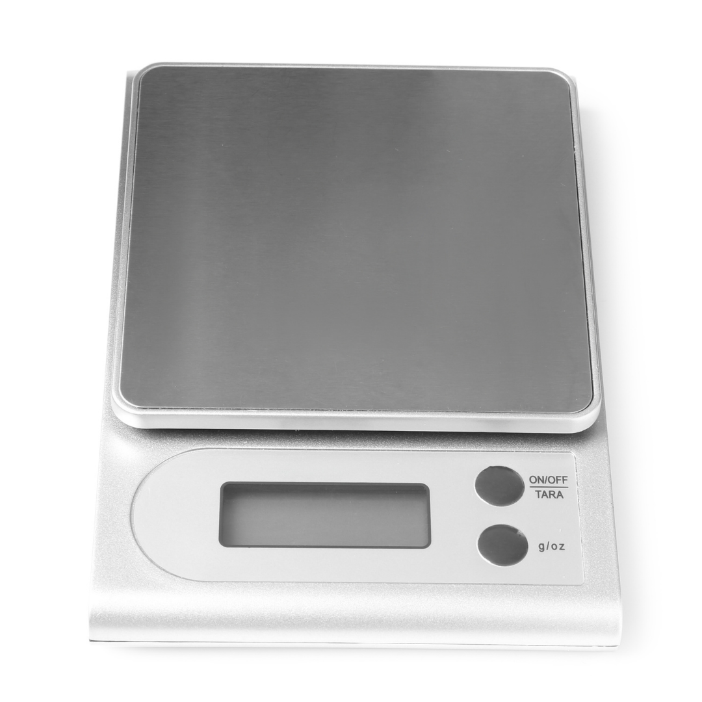
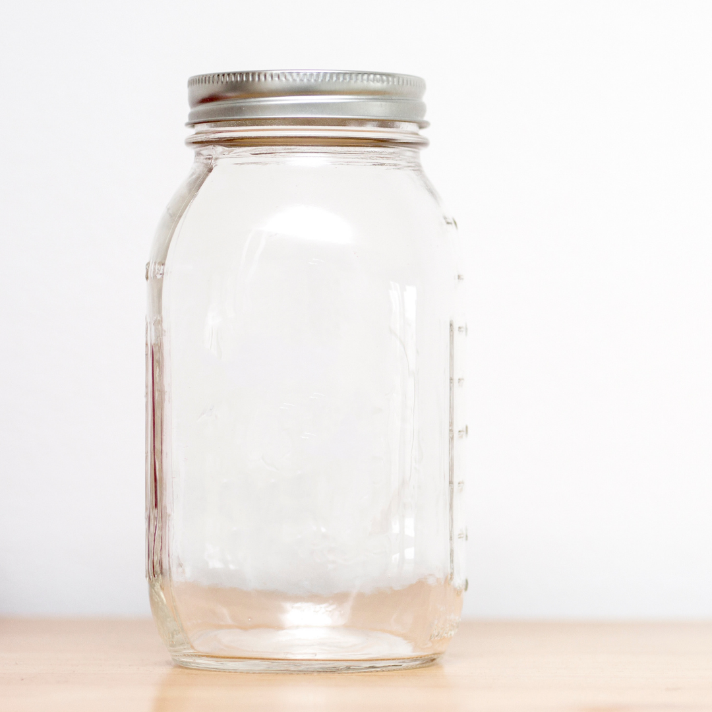
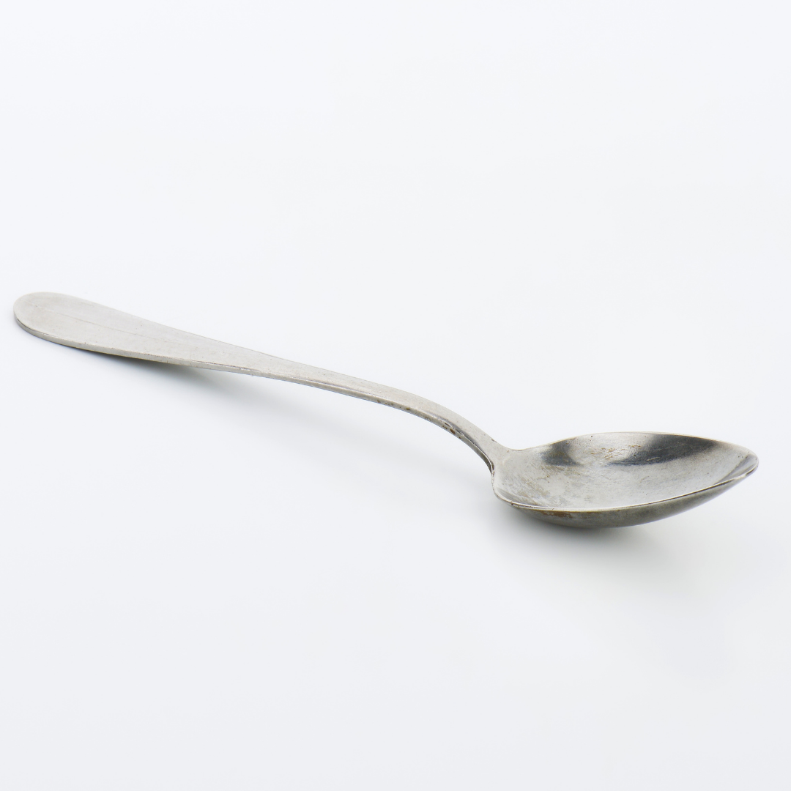
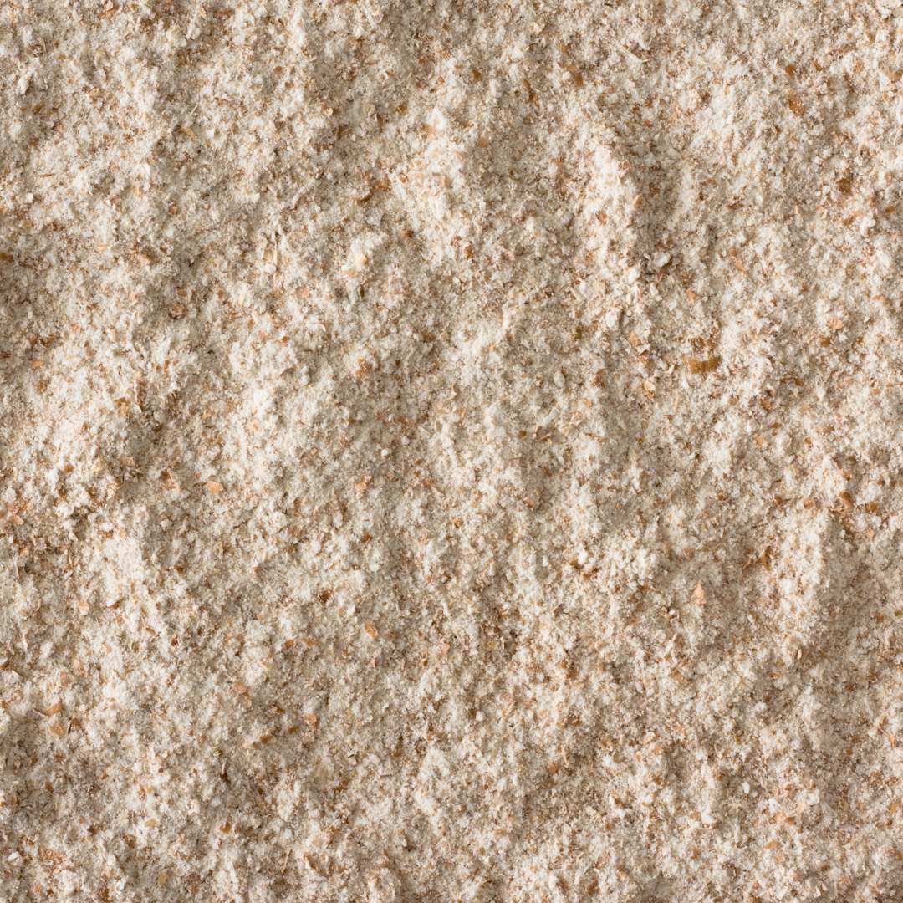
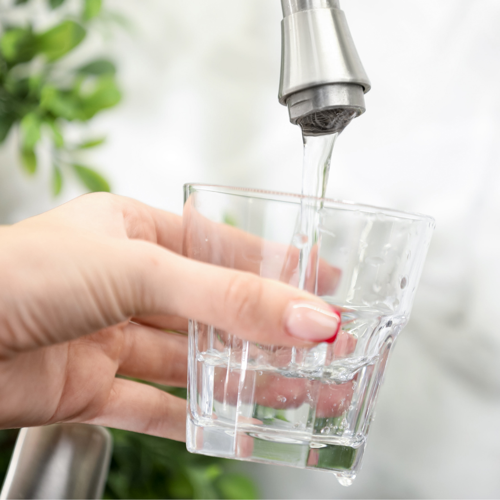

En køkkenvægt
Så du kan måle i gram – både mel, vand og den surdej, du beholder.
FÅ TING. INGEN SPECIALUDSTYR.
Du behøver ikke købe et helt bageudstyr. Find de fem ting her, og brug tjeklisten til at holde styr på det.
TJEKLISTE

Så du kan måle i gram – både mel, vand og den surdej, du beholder.

Et fødevaresikkert glas på ca. 0,5–1 liter med plads til vækst. Låget skal ligge løst, ikke lukke tæt.

Til at røre mel og vand sammen. En almindelig ske er helt fin.

Fuldkornshvedemel til starten. Hvidt hvedemel til fodringerne fra næste dag.

Vand fra hanen. Vej det på vægten, ligesom du vejer melet.
50 g fuldkornshvedemel + 50 g vand. Mængderne til de næste fodringer står i guiden, når du skal bruge dem.
VALGFRIT · KUN TIL BAGNING
Intet af dette er nødvendigt for at starte eller fodre din surdej. Vent, til du har lyst til at bage.
Kan gøre det lettere at håndtere og dele en brøddej.
VALGFRIT · SENERE
Kan støtte formen på et brød under hævning.
VALGFRIT · SENERE
Kan holde på dampen, når du senere bager brød.
VALGFRIT · SENERE